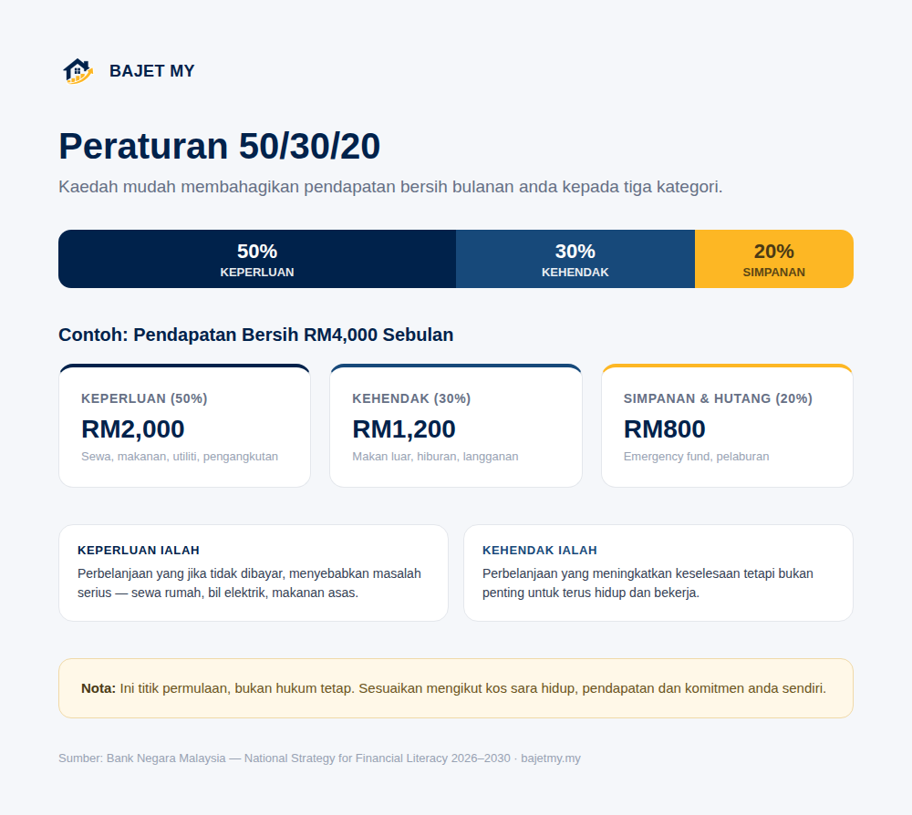

Ramai orang tahu mereka perlu berbajet, tetapi tidak tahu bagaimana hendak membahagikan gaji secara praktikal. Peraturan 50/30/20 ialah salah satu kaedah paling mudah untuk bermula.

Apa itu peraturan 50/30/20?
Konsepnya mudah — bahagikan pendapatan bersih bulanan anda kepada tiga kategori:
| Kategori | Peratusan | Contoh |
|---|---|---|
| Keperluan (Needs) | 50% | Sewa/ansuran rumah, makanan asas, utiliti, pengangkutan, insurans |
| Kehendak (Wants) | 30% | Makan di luar, hiburan, langganan streaming, membeli-belah bukan keperluan |
| Simpanan & Hutang (Savings) | 20% | Emergency fund, simpanan persaraan, pelaburan, bayaran tambahan hutang |
Contoh pengiraan
Katakan pendapatan bersih anda RM4,000 sebulan:
Keperluan (50%): RM4,000 × 0.50 = RM2,000 Kehendak (30%): RM4,000 × 0.30 = RM1,200 Simpanan & Hutang (20%): RM4,000 × 0.20 = RM800
Jumlah ini bukan angka mutlak — ia titik permulaan yang boleh disesuaikan mengikut keadaan sebenar anda.
Bagaimana membezakan "keperluan" dan "kehendak"?
Ini bahagian yang paling sukar untuk kebanyakan orang. Beberapa panduan mudah:
- Keperluan ialah perbelanjaan yang jika tidak dibayar, menyebabkan masalah serius — sewa rumah, bil elektrik, makanan asas, pengangkutan ke tempat kerja
- Kehendak ialah perbelanjaan yang meningkatkan keselesaan tetapi bukan penting untuk terus hidup dan bekerja — makan di restoran, langganan hiburan, gajet baharu
Contohnya, telefon bimbit asas untuk komunikasi kerja adalah keperluan, tetapi model terkini dengan harga premium adalah kehendak.
Kenapa 20% simpanan penting?
Kategori simpanan & hutang bukan sekadar "lebihan" — ia patut dianggap sebagai perbelanjaan wajib, sama seperti sewa rumah. Susunan keutamaan yang biasa disyorkan:
- Emergency fund — sehingga mencapai sasaran 3-6 bulan perbelanjaan penting
- Bayaran tambahan hutang berkos tinggi — seperti kad kredit
- Simpanan persaraan/pelaburan jangka panjang — seperti KWSP tambahan atau ASB
Bila peratusan 50/30/20 perlu disesuaikan?
Peraturan ini ialah titik permulaan, bukan hukum tetap. Sesuaikan mengikut keadaan:
| Keadaan | Pertimbangan |
|---|---|
| Kos sara hidup tinggi (bandar besar) | Bahagian keperluan mungkin melebihi 50% — kurangkan bahagian kehendak dahulu |
| Pendapatan tinggi berbanding kos sara hidup | Boleh tingkatkan bahagian simpanan melebihi 20% |
| Komitmen hutang sedia ada tinggi | Mungkin perlu mengurangkan kehendak untuk mempercepatkan bayaran hutang |
| Baru mula bekerja, belum ada emergency fund | Fokuskan bahagian simpanan kepada emergency fund dahulu sebelum pelaburan |
Nota: Jika keperluan asas anda sudah melebihi 50% pendapatan, ini petanda penting untuk menyemak semula perbelanjaan besar seperti sewa/ansuran rumah atau kenderaan — bukan sekadar memotong perbelanjaan kecil.
Cara mula menggunakan kaedah ini
- Kira pendapatan bersih bulanan anda (selepas potongan wajib)
- Senaraikan perbelanjaan sedia ada dan kelaskan sebagai keperluan atau kehendak
- Bandingkan jumlah sebenar dengan sasaran 50/30/20
- Kenal pasti kategori yang jauh melebihi sasaran dan sesuaikan secara beransur-ansur
Jangan cuba menyesuaikan semuanya serentak dalam sebulan. Perubahan kecil dan konsisten lebih bertahan lama berbanding pemotongan drastik yang sukar dikekalkan.
Ringkasan
Peraturan 50/30/20 membahagikan pendapatan bersih kepada 50% keperluan, 30% kehendak dan 20% simpanan & hutang. Ia bukan formula tetap — sesuaikan mengikut kos sara hidup, pendapatan dan komitmen anda sendiri, tetapi gunakan sebagai titik permulaan yang mudah difahami untuk mula berbajet dengan lebih tersusun.
Sumber
- Bank Negara Malaysia — National Strategy for Financial Literacy 2026–2030